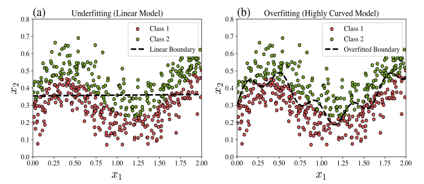
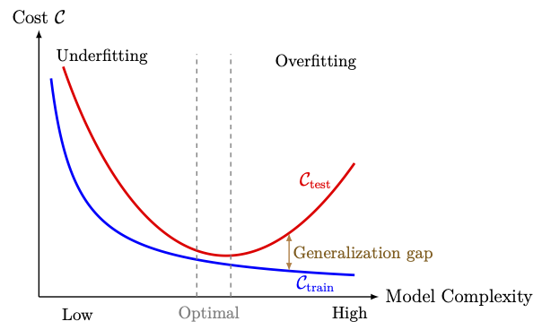
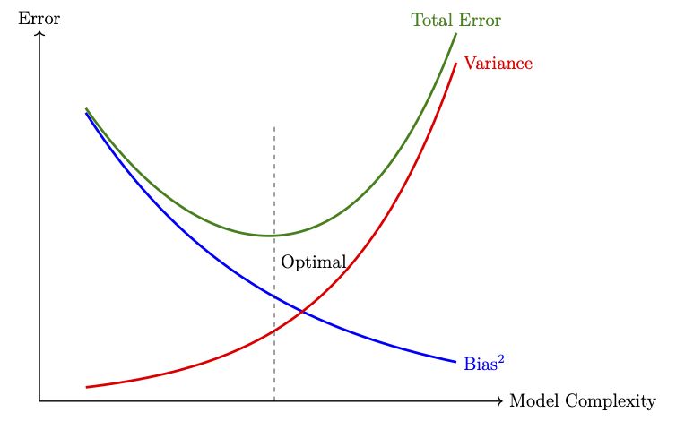
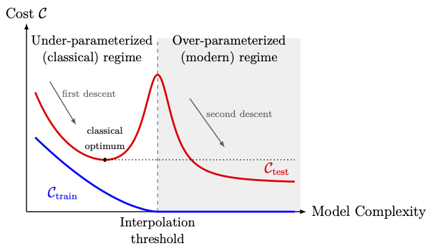
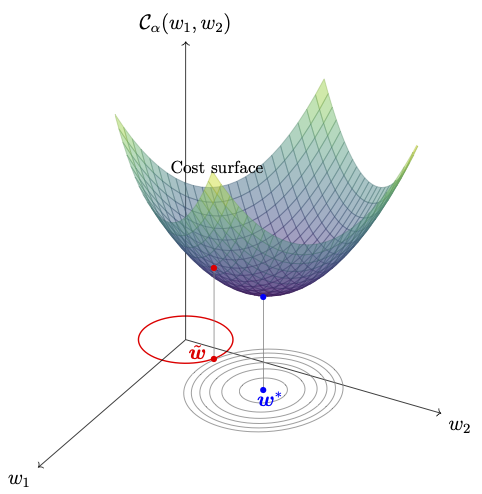
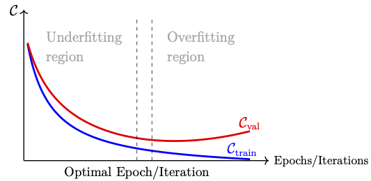

Chapter 6: Generalization and Regularization
As a part of training a neural network, the model parameters \(\boldsymbol{\Theta}\) are determined by minimizing a cost function over the training dataset \(\mathcal{D}_{\text{train}}\). An accurate minimizer makes the model fit the training dataset accurately. However, tuning the parameters too precisely to fit \(\mathcal{D}_{\text{train}}\) has the risk of overfitting the data. In such cases, the model represents the training dataset very well (often referred to as memorizing the data) but fails to perform equally well on unseen data, such as the test dataset \(\mathcal{D}_{\text{test}}\). This behavior is particularly prominent when the source of the data is noisy.
On the other hand, if the parameters are not tuned adequately, the model may suffer from underfitting, where it fails to capture even the underlying patterns in the training dataset, and this again leads to poor performance on unseen data. Hence, a balance must be achieved between underfitting and overfitting so that the model represents the training dataset reasonably well and at the same time performs satisfactorily on unseen data.
The ability of a trained model to perform well on unseen data is referred to as generalization. If a model performs well on the test dataset, we say that the model generalizes well. Training a model with good accuracy on the training dataset while also achieving good generalization is the goal of regularization. In neural networks, regularization refers to a set of techniques applied during training, in which certain constraints are applied to the learning process in order to reduce overfitting so as to improve the model generalization.
In this chapter, we first discuss the concept of generalization in Section 6.1, starting with the fundamental idea of underfitting and overfitting. We then discuss parameter-based and process-based regularization techniques in Section 6.2.
6.1 Evaluation of Model Behaviour
A deep neural network is trained on a portion of the dataset, the training dataset. The model works sufficiently well on this data as the cost function is minimized to a required extent. However, this does not guarantee that the model will perform equally well on unseen data. Therefore, we have to evaluate the model performance on the test dataset before deploying it in practice.We start with building intuition for underfitting and overfitting in Subsection 6.1.1 and obgain a generalization bound in Subsection 6.1.2. Further, we discuss a classical statistical tool, the bias-variance tradeoff, in Subsection 6.1.3 to identify the limitations of the model performance, and we extend our discussion to the modern deep double descent phenomenon, which is discussed in Subsection 6.1.4 and is more specific to deep learning models.
6.1.1 Underfitting and Overfitting
Underfitting occurs when the model is too simple to capture the underlying patterns in the data. In such cases, the model performs poorly on both the training and test datasets. Figure 6.1(a) illustrates a binary classification model that underfits a complex dataset.Overfitting occurs when the model is too complex relative to the amount of noise level of the data. In such cases, the model fits the training data very accurately (including its noise) but fails to generalize to unseen data. Figure 6.1(b) illustrates a binary classification model that overfits a complex dataset.

Figure 6.1: (a) Underfitting model illustration, where linear model is used for a complex dataset, which failed to capture the underlying pattern. (b) Overfitting illustration, where the model is fine tuned to capture the underlying pattern of the training dataset more closely.
Both underfitting and overfitting are undesirable in a trained model. The cost function can be used to characterize these behaviors as follows:
- If both \(\mathcal{C}_{\text{test}}(\boldsymbol{\Theta}^*)\) and \(\mathcal{C}_{\text{train}}(\boldsymbol{\Theta}^*)\) are high, then the model is said to be underfitted.
- If \(\mathcal{C}_{\text{test}}(\boldsymbol{\Theta}^*)\) is high and \(\mathcal{C}_{\text{train}}(\boldsymbol{\Theta}^*)\) is low, then the model is said to be overfitted,
In most of the practical situations (if not always), we have
An illustrative sketch showing the underfitting, optimal, and overfitting regions is presented in Figure 6.2.

Figure 6.2: Variation of training cost \(\mathcal{C}_{\text{train}}\) and test cost \(\mathcal{C}_{\text{test}}\) with model complexity, illustrating underfitting, overfitting, and optimal generalization.
6.1.2 Generalization Bounds
In the previous subsection, the generalization gap was defined in terms of the training and test errors, which are computed on finite datasets. To establish theoretical generalization bounds, we need a measure of performance that averages the loss over all input-label pairs, weighted by the unknown distribution from which both the training and the test examples are drawn. Unlike in the previous subsection, we define this measure on functions rather than on parameters. This is because a trained model is compared with the best possible predictor, which need not be representable by any fixed architecture.Throughout this subsection, we use the notation \(\mathcal{D}_x \subseteq \mathbb{R}^{n_0}\) to denote the set of all input vectors, called the feature space, and \(\mathcal{D}_y\subseteq \mathbb{R}^{n_L}\) to denote the set of all labels, called the label space. Therefore, the set of all possible examples can be written as \(\mathcal{D}_x \times \mathcal{D}_y\).
We further assume that the input vectors and their labels are related through an unknown probability distribution \(\mathcal{P}\) on \(\mathcal{D}_x \times \mathcal{D}_y\), called the data distribution. Every example \((\boldsymbol{x},\boldsymbol{y})\), including the examples in the training dataset and test dataset, is assumed to be drawn from \(\mathcal{P}\).
A labeled dataset of \(N\) examples
We denote the set of all measurable functions from \(\mathcal{D}_x\) to \(\mathcal{D}_y\) by
Let \(\ell:\mathbb{R}^{n_L}\times\mathbb{R}^{n_L}\rightarrow[0,\infty)\) denote a loss function, let \(\mathcal{P}\) be a data distribution on \(\mathcal{D}_x \times \mathcal{D}_y\), and let \(h\in \mathcal{M}\).
- The population risk of \(h\) is defined as
\begin{eqnarray} \mathcal{R}(h) = \mathbb{E}_{(\boldsymbol{x},\boldsymbol{y})\sim\mathcal{P}}\Big[\ell\big(\boldsymbol{y},h(\boldsymbol{x})\big)\Big]. \end{eqnarray}(6.2)
- Given a dataset \(\mathcal{D}\) of \(N\) examples, the empirical risk of \(h\) is defined as
\begin{eqnarray} \widehat{\mathcal{R}}_{\mathcal{D}}(h) = \frac{1}{N}\sum_{k=1}^N \ell\big(\boldsymbol{y}_k,h(\boldsymbol{x}_k)\big). \end{eqnarray}(6.3)
A function in \(\mathcal{M}\) that attains this infimum, if it exists, is a best possible predictor.
Our next task is to find a function \(h\in \mathcal{M}\) whose risk is close to the Bayes risk. However, one challenge is that we cannot evaluate \(\mathcal{R}(h)\) since the distribution \(\mathcal{P}\) is unknown. Therefore, we approximate the population risk by the empirical risk \(\widehat{\mathcal{R}}_{\mathcal{D}}(h)\). Another challenge is that we cannot search over all measurable functions. To address this difficulty, we restrict the search to a fixed set of functions, called the hypothesis set and denoted by \(\mathcal{H} \subseteq \mathcal{M}\).
In deep learning, \(\mathcal{H}\) is a set of neural networks. For instance, for a fixed architecture and a fixed set \(\mathcal{W}\) of admissible parameters, we take
Let \(h \in \mathcal{M}\) be a given function with \(\mathcal{R}(h)<\infty\), and let \(\mathcal{D}\sim\mathcal{P}^N\). Then
- \(\widehat{\mathcal{R}}_{\mathcal{D}}(h)\) is an unbiased estimator of \(\mathcal{R}(h)\), that is,
\[ \mathbb{E}_{\mathcal{D}\sim\mathcal{P}^N}\big[\widehat{\mathcal{R}}_{\mathcal{D}}(h)\big] = \mathcal{R}(h). \]
- If, in addition, \(\sigma_h^2 := \mathrm{Var}\big[\ell\big(\boldsymbol{y},h(\boldsymbol{x})\big)\big]<\infty\) for \((\boldsymbol{x},\boldsymbol{y})\sim\mathcal{P}\), then for every \(\epsilon>0\)
\[ \mathbb{P}\Big(\big|\widehat{\mathcal{R}}_{\mathcal{D}}(h)-\mathcal{R}(h)\big|\ge\epsilon\Big) \le \frac{\sigma_h^2}{N\epsilon^2}. \]In particular, \(\widehat{\mathcal{R}}_{\mathcal{D}}(h)\rightarrow\mathcal{R}(h)\) in probability as \(N\rightarrow\infty\).
For \(k=1,2,\ldots,N,\) define the random variable
- The proof is left as an exercise.
- Since \(Z_1,Z_2,\ldots,Z_N\) are independent, we have
\[ \mathrm{Var}\big[\widehat{\mathcal{R}}_{\mathcal{D}}(h)\big] = \frac{\sigma_h^2}{N}. \]The result now follows by Chebyshev's inequality and part 1 (complete the proof).
In view of the above lemma, we replace the population risk by the empirical risk and minimize it over the hypothesis set. This leads to the following definition.
Let \(\mathcal{H}\) be a hypothesis set, let \(\ell\) be a loss function, and let \(\mathcal{D}\) be a dataset of \(N\) examples. A function \(h_{\mathcal{D}}\in\mathcal{H}\) satisfying
The above problem assumes that a minimizer \(\boldsymbol{\Theta}^*\in \mathcal{W}\) of \(\mathcal{C}\) exists. It is important to note that such a minimizer need not exist in \(\mathcal{W}\), and consequently an ERM may fail to exist in \(\mathcal{H}\). The following problem gives a sufficient condition for the existence of an ERM.
- Throughout this section, we assume that an ERM \(h_{\mathcal{D}}\) exists for every dataset \(\mathcal{D}\).
- In practice, an optimization algorithm of Chapter 5 only approximates \(\boldsymbol{\Theta}^*\). The analysis below ignores this optimization error.
6.1.2.1 Error Decomposition
Fix the architecture and the parameter set \(\mathcal{W}\), and therefore the hypothesis set \(\mathcal{H}\). Assume that \(\mathcal{R}(h)<\infty\) for all \(h\in \mathcal{H}\).Define the following two quantities:
The number \(\varepsilon_\text{gen}\) is called the uniform generalization gap of \(\mathcal{H}\) for the dataset \(\mathcal{D}\). The number \(\varepsilon_\text{approx}\) is called the approximation error of \(\mathcal{H}\).
Note that \(\varepsilon_\text{gen}\) depends on the dataset \(\mathcal{D}\), and hence is a random variable. The number \(\varepsilon_\text{approx}\) depends only on \(\mathcal{H}\), \(\ell\) and \(\mathcal{P}\), and does not depend on \(\mathcal{D}\). Since \(\mathcal{R}^*\le\mathcal{R}(g)\) for every \(g\in\mathcal{H}\), we have \(\varepsilon_\text{approx}\ge 0\).
Let \(\mathcal{H}\) be a hypothesis set with \(\mathcal{R}(h)<\infty\) for all \(h\in\mathcal{H}\). Let \(\mathcal{D}\) be a dataset, and let \(h_{\mathcal{D}}\) be an empirical risk minimizer. Then
and
Let \(g\in\mathcal{H}\) be arbitrary. First, show that
Proof of (6.7): Left as an exercise.
The number \(\varepsilon_\text{int}\) defined in the above theorem is the training error of the empirical risk minimizer. If there exists an \(h\in\mathcal{H}\) that fits all the examples of \(\mathcal{D}\) exactly (with a loss satisfying \(\ell(\boldsymbol{y},\boldsymbol{y})=0\) for all \(\boldsymbol{y}\in\mathcal{D}_y\)), then we have \(\varepsilon_\text{int}=0\). For this reason, \(\varepsilon_\text{int}\) is also called the interpolation error.
The generalization gap (6.1) given by
Take \(\mathcal{D}=\mathcal{D}_\text{train}\), and \(h_{\mathcal{D}}={\mathscr{F}_{L,\hat{n}}}(\,\cdot\,;\boldsymbol{\Theta}^*)\) is the trained network. If \(\mathcal{D}_\text{test}\) is drawn independently of \(\mathcal{D}_\text{train}\), then the trained network is a fixed function with respect to \(\mathcal{D}_\text{test}\). Hence, by Lemma 6.1, \(\mathcal{C}_\text{test}(\boldsymbol{\Theta}^*)\) is an unbiased estimator of \(\mathcal{R}(h_{\mathcal{D}})\). Also, the training cost is exactly the empirical risk \(\widehat{\mathcal{R}}_{\mathcal{D}}(h_{\mathcal{D}})\) of the trained network.
Therefore, \(\mathcal{G}\) is an estimate of \(\mathcal{R}(h_{\mathcal{D}})-\widehat{\mathcal{R}}_{\mathcal{D}}(h_{\mathcal{D}})\), and we have
Theorem 6.1 shows that a small risk of the trained model requires two things.
- The approximation error \(\varepsilon_\text{approx}\) (or the interpolation error \(\varepsilon_\text{int}\)) must be small. This requires \(\mathcal{H}\) to be rich enough. For neural networks, this is a question about the expressivity of the architecture discussed in the next chapter.
- The uniform generalization gap \(\varepsilon_\text{gen}\) must be small. This requires \(\mathcal{H}\) not to be too rich compared with the number \(N\) of examples.
6.1.2.2 Generalization Bounds for a Finite Hypothesis Set
We state a generalization bound for a finite hypothesis set and then explain how the bound is extended to infinite hypothesis sets. We omit the proofs in this course.Assume that a hypothesis set \(\mathcal{H}\subseteq\mathcal{M}\) has finitely many elements, say \(M=\#(\mathcal{H})\). Also, assume that the loss function \(\ell\) satisfies
The generalization bound is stated in the following theorem.
Let \(\mathcal{H}\) be a finite hypothesis set with \(M=\#(\mathcal{H})\) elements, and let \(\ell\) be a loss function with values in \([c_1,c_2]\) on \(\mathcal{D}_y\times\mathcal{D}_y\) and \(C=c_2-c_1\). Then, for every data distribution \(\mathcal{P}\) on \(\mathcal{D}_x \times \mathcal{D}_y\), every \(N\in\mathbb{N}\) and every \(\delta\in(0,1)\), we have
where
Since an empirical risk minimizer \(h_{\mathcal{D}}\) belongs to \(\mathcal{H}\), the above theorem gives, with probability at least \(1-\delta\),
- The population risk of the trained model is at most its training error plus the generalization bound that decays like \(1/\sqrt{N}\).
- The bound grows only like \(\sqrt{\ln M}\) as the size of the hypothesis set increases. Thus, a very large finite hypothesis set can still generalize, provided \(N\) is large compared with \(\ln M\) (as illustrated in Problem 6.3).
- The generalization bound requires the loss function to be bounded. The \(0\)--\(1\) loss satisfies this with \(C=1\). The square loss satisfies this when the labels and the predictions lie in a bounded set. The cross-entropy loss is unbounded, and the theorem does not apply to it directly.
The following problem illustrates a case where the hypothesis set is finite.
- Show that \(\#(\mathcal{H})\le 2^{bm}\).
- Deduce that, for every data distribution \(\mathcal{P}\), every \(N\in\mathbb{N}\) and every \(\delta\in(0,1)\),
\[ \mathbb{P}_{\mathcal{D}\sim\mathcal{P}^N}\left(\sup_{h\in\mathcal{H}}\big|\mathcal{R}(h)-\widehat{\mathcal{R}}_{\mathcal{D}}(h)\big| \le \sqrt{\frac{bm\ln 2 + \ln(2/\delta)}{2N}}\,\right) \ge 1-\delta. \]
- Let \(m=10^5\), \(b=32\), \(\delta=0.01\) and \(\epsilon=0.05\). Find the smallest number of examples \(N\) that guarantees that the generalization bound in part 2 is at most \(\epsilon\).
Let \(\mathcal{H}\), \(\ell\) and \(C\) be as in Theorem 6.2, and let \(h_{\mathcal{D}}\) be an empirical risk minimizer. Then, show that, for every data distribution \(\mathcal{P}\), every \(N\in\mathbb{N}\) and every \(\delta\in(0,1)\), with probability at least \(1-\delta\) over \(\mathcal{D}\sim\mathcal{P}^N\), we have
6.1.2.3 Extension to General Hypothesis Sets
In general, a hypothesis set of neural networks with real-valued parameters is uncountable, and therefore \(M=\#(\mathcal{H})\) is infinite. Consequently, Theorem 6.2 is not applicable.The finite bound is nevertheless the basic step for infinite hypothesis sets. The idea consists of the following steps:
- We cover \(\mathcal{H}\) by finitely many balls of a small radius \(r\) in the supremum norm, assuming that such a finite cover exists.
- We apply the finite bound to the centers of these balls, which form a finite set. Every \(h\in\mathcal{H}\) lies within distance \(r\) of some center. Hence the deviation between its two risks exceeds that of the center by at most a term proportional to \(r\).
- In the resulting bound, the number of elements \(M\) is replaced by the number of balls needed to cover \(\mathcal{H}\).
Let \(\mathcal{H}\subseteq\mathcal{M}\) and \(r>0\). The covering number \(\mathscr{C}(\mathcal{H},r)\) is the smallest \(n\in\mathbb{N}\) for which there exist functions \(g_1,g_2,\ldots,g_n:\mathcal{D}_x\rightarrow \mathcal{D}_y\) such that, for every \(h\in\mathcal{H}\), there is an index \(i\in\{1,2,\ldots,n\}\) with
Let \(n_L=1\), let \(\mathcal{H}\subseteq\mathcal{M}\), and \(\mathcal{D}_y\subseteq[-C_Y,C_Y]\) for some \(C_Y>0\). Let \(\alpha>0\). Let the loss function \(\ell\) be Lipschitz continuous in the prediction with constant \(C_L>0\), that is,
6.1.3 Bias-Variance Tradeoff
Achieving good generalization depends on several factors, such as the complexity of the model (depth and width), the size and representativeness of the training dataset, and the use of suitable regularization techniques. Our mathematical understanding of the role of these factors in learning a model is only partial. Therefore, practical success often relies heavily on experience, experimentation, and intuition in choosing them. Thus, achieving good generalization is often more of an art than a science. Nevertheless, there are some classical statistical perspectives on generalization that can partially guide us towards achieving good generalization. In this subsection, we discuss one such perspective, known as the bias-variance tradeoff. This perspective is particularly relevant when the cost function is the mean squared error. In this case, the expected squared prediction error can be written as the sum of three terms, namely the squared bias, the variance, and the noise. The first two terms behave in opposite ways as the model complexity changes.
As in the previous subsection, we assume that the labeled dataset \(\mathcal{D}\) of \(N\) examples is drawn i.i.d. from a probability distribution \(\mathcal{P}\), i.e., \(\mathcal{D} \sim \mathcal{P}^N\). Different draws give different training datasets. For each dataset, the learning algorithm produces a predictor (an ANN model in our case), denoted by \(\mathscr{F}_{\mathcal{D}}\), which may differ depending on the dataset.
The aim is to design a learning process (by choosing a suitable network with suitably tuned hyperparameters) that can train a predictor capable of generalizing well to unseen test examples \((\boldsymbol{x},\boldsymbol{y})\) drawn from the same distribution.
Clearly, there is randomness in the way the training datasets are generated. We therefore treat \(\mathcal{D}\) as a random variable representing a training dataset of \(N\) examples. Consequently, for each fixed input \(\boldsymbol{x}\), the prediction \(\mathscr{F}_{\mathcal{D}}(\boldsymbol{x})\) of the predictor obtained from a fixed learning algorithm (fixed architecture and fixed hyperparameters) is also a random vector. The generalization performance of these predictors can be assessed by taking the expectation over \(\mathcal{D}\sim\mathcal{P}^N\).
Assume that the true label is generated as
At a given test input \(\boldsymbol{x}\), the expected squared prediction error is given by
Expanding the square and using the independence of \(\boldsymbol{\epsilon}\) and \(\mathcal{D}\), \(\mathbb{E}[\boldsymbol{\epsilon}] = \boldsymbol{0}\) and \(\mathbb{E}\!\left[\|\boldsymbol{\epsilon}\|^2\right] = \mathrm{tr}(\Sigma_\epsilon),\) we get
Hence, the decomposition becomes
- Bias\(^2\) measures the squared Euclidean distance between the average prediction of the model and the value of the true function \(\boldsymbol{f}\) at \(\boldsymbol{x}\). A high bias indicates a systematically wrong model (underfitting).
- Variance measures how sensitive the model's prediction is to fluctuations in the training data. High variance corresponds to overfitting.
- Noise is the irreducible error due to randomness in the data itself. It sets a lower bound on the achievable prediction error.
The above expression explains how the reducible part of the prediction error arises from two sources, namely, high bias, due to an overly simple model that fails to capture data complexity, and high variance, due to a model that is too sensitive to fluctuations of the training dataset.
In the classical setting, increasing the model complexity typically reduces the bias and increases the variance. The optimal generalization performance is achieved at a balance between these two opposing effects, known as the bias-variance tradeoff (see Figure 6.3). In Subsection 6.1.4, we see that this picture changes for heavily overparameterized models.

Figure 6.3: An illustrative sketch of the bias-variance tradeoff.
6.1.4 Overparameterization and Double Descent
From the bias-variance tradeoff discussed in the previous subsection, we see that the test error is expected to increases once the model complexity exceeds an optimal value (see Figure 6.3). According to this classical statistics approach, a model that exactly fits the training dataset should generalize poorly. Surprisingly, modern deep neural networks exhibit different behaviour as model complexity increases. As the number of parameters exceeds the number of training examples by a large margin, many neural networks fit the training dataset exactly and, at the same time, achieve a small test error. This behaviour is part of a phenomenon called double descent, which we discuss in this subsection.A model is said to be overparameterized if its number of parameters is larger than the number \(N\) of training examples. A model \(h\) is said to interpolate the training dataset \(\mathcal{D}\) if
- If \(n < N\), then, in general, no interpolating parameter vector exists.
- If \(n=N\), then \(A\) is invertible, and \(\boldsymbol{w}=A^{-1}\boldsymbol{y}\) is the unique interpolating parameter vector.
- If \(n > N\), then the interpolating parameter vectors form an affine subspace of \(\mathbb{R}^n\) of dimension \(n-N\).

Figure 6.4: An illustrative sketch of the double descent phenomenon. The training cost reaches zero at the interpolation threshold. The test cost peaks at the interpolation threshold and decreases again in the over-parameterized regime, where it can fall below the classical optimum (dotted line).
- Under-parameterized (classical) regime. Below the interpolation threshold, the test error follows the U-shaped curve of the bias-variance tradeoff. It first decreases and then increases.
- Interpolation threshold. Near the interpolation threshold, the training error reaches zero (computationally, a value close to zero), and the test error attains a peak.
- Over-parameterized (modern) regime. Beyond the interpolation threshold, the training error remains zero. The test error decreases again as the model complexity increases. In many experiments, it falls below the minimum attained in the classical regime.
- Double descent does not contradict the bias-variance decomposition. The decomposition is an identity and holds for every model. What fails beyond the interpolation threshold is the classical assumption that the variance increases with the model complexity.
- Double descent is also observed when the model complexity is fixed and the number of training epochs increases. It is also observed when the model is fixed and the number \(N\) of training examples varies. In the latter case, increasing \(N\) moves the interpolation threshold, and, for a model near the threshold, more data can increase the test error.
- The peak is more pronounced when the labels are noisy. A suitably tuned explicit regularization, such as the \(\ell^2\)-regularization of Subsection 6.2.1, can reduce or remove the peak.
- For deep neural networks, a complete mathematical explanation of double descent is not yet available. The linear least-squares example only gives a heuristic picture.
6.2 Regularization Techniques
Techniques designed to reduce overfitting and improve generalization are commonly referred to as regularization techniques.Regularization can be applied in two broad ways. One way is the parameter-based regularization, which directly penalizes or constrains the model parameters (for example, weight decay by \(L^1\) or \(L^2\) penalties). Another form of regularization is the process-based regularization, which modifies the training procedure itself to reduce overfitting (for example, early stopping, dropout, or data augmentation).
6.2.1 Parameter-based Regularization
A neural network with large weights can easily overfit a training dataset. To see this, consider a single neuron with outputOne way to prevent this is to keep the weights smaller by minimizing (also referred to as penalizing) the norm of the weight vector during training. This can be achieved by minimizing a regularized cost function defined as
Commonly used regularization parameters are the following:
- \(\ell^1\)-Regularization: In this case, the regularization function is taken as
\[ \Omega(\boldsymbol{\Theta}_{\boldsymbol{w}}) = \|\boldsymbol{\Theta}_{\boldsymbol{w}}\|_1. \]
- \(\ell^2\)-Regularization: In this case, the regularization function is taken as
\[ \Omega(\boldsymbol{\Theta}_{\boldsymbol{w}}) = \frac{1}{2}\|\boldsymbol{\Theta}_{\boldsymbol{w}}\|^2_2. \]
The unconstrained optimization problem with a regularized cost function
Geometric Interpretation: For the sake of simplicity, let us take \(\boldsymbol{\Theta} = (b,\boldsymbol{w})\) with \(\boldsymbol{w}\in \mathbb{R}^2\), and consider the linear regression model, where the cost function is the MSE function. The regularized minimizer \(\tilde{\boldsymbol{w}}\) corresponds to the point of tangency between the contours (level sets) of the cost surface and the constraint region. The constraint region is a circle (for \(p=2\)) centered at the origin with radius \(c\), as shown in Figure 6.5.
As stated in Problem 6.6, for linear regression, in general, we can observe (only numerically) the following dependency between \(\alpha\) and \(c\):
- as \(\alpha\) increases, \(c\) decreases, and
- as \(\alpha\) decreases, \(c\) increases.

Figure 6.5: Geometric interpretation of \(\ell^2\)-regularized cost function. The 3D surface represents the cost function \(\mathcal{C}_\alpha(\boldsymbol{w})\) as a function of weights \(w_1\) and \(w_2\). The ellipses in the \(w_1\)-\(w_2\) plane show the contour lines of the cost function. The red circle represents the regularization constraint \(\|\boldsymbol{w}\|_2 \leq c\). The unconstrained minimizer \(\boldsymbol{w}^*\) is marked in blue, while the constrained minimizer \(\tilde{\boldsymbol{w}}\) is marked in red, showing the tangency between the constraint and the cost contours.
6.2.2 Process-based Regularization
Process-based regularization techniques modify the training procedure itself to reduce overfitting, rather than directly constraining the model parameters. Some common approaches include early stopping, dropout, and data augmentation, which we discuss in this section.6.2.2.1 Early Stopping
Early stopping is perhaps the most commonly used regularization technique due to its simplicity and effectiveness. This method monitors the performance of the model on a validation dataset during training and stops the optimization process (in terms of iterations or epochs) when the validation performance ceases to improve. It then returns the parameter at which the validation performance was the best.Recall that the given dataset is divided into three parts, namely, the training dataset, the validation dataset, and the test dataset. The early stopping technique uses the validation dataset to monitor the performance of the model during the training process.
It is generally observed that, as training progresses over iterations or epochs, the training error decreases monotonically, whereas the validation error shows a different behavior. For the initial iterations (or epochs), the validation error also decreases, but beyond a certain point, it starts to increase gradually, producing a U-shaped error profile as sketched in Figure 6.6. The early stopping technique makes use of this behavior to decide the stopping criterion for the training process.

Figure 6.6: An illustrative sketch of the U-shaped validation error with the monotonically decreasing training error.
The idea behind the early stopping technique is made precise in the following algorithm:
Input:
- Training and validation datasets \(\mathcal{D}_\text{train}\) and \(\mathcal{D}_\text{val}\),
- Maximum number of epochs/iterations \(K\) (choose this sufficiently large),
- Validation frequency \(n\ll K\), which is the number of epochs/iterations between two successive validations,
- Patience \(p_0\), which is the number of successive validations without improvement that is allowed before stopping, and
- Cost/loss function.
Assign \(p=0\), and \(\mathcal{C}_{\text{val}}^* = +\infty\) (in a program, assign a sufficiently large number).
Initialize the parameter \(\boldsymbol{\Theta}_0\) (usually randomly; in some simple cases, it may be taken as zero).
Start with \(k=0\) and do the following while \(k+n\le K\):
- Step 1: Train the model for \(n\) epochs/iterations, starting from \(\boldsymbol{\Theta}_k\), using any of the optimization methods that we discussed in the previous chapter. Assign
\[k \leftarrow k + n.\]Let the parameter at the end of this training step be denoted by \(\boldsymbol{\Theta}_k\).
- Step 2: Validate \(\boldsymbol{\Theta}_k\) by performing the following steps:
- Perform forward propagation on all the examples of \(\mathcal{D}_\text{val}\),
- Compute \(\mathcal{C}_{\text{val}}\).
- Check the following:
- If \(\mathcal{C}_{\text{val}} < \mathcal{C}_{\text{val}}^*\), then assign
- \(~~~~\mathcal{C}_{\text{val}}^* = \mathcal{C}_{\text{val}},\)
- \(~~~~\tilde{\boldsymbol{\Theta}} = \boldsymbol{\Theta}_k\).
- \(~~~~p=0\).
- Else
- \(~~~~ p \leftarrow p+1.\)
- If \(p \ge p_0\), then stop and go to the output.
- Else, go to Step 1.
- Early stopping is often combined with a learning-rate schedule. For instance, when \(p = p_0/2\), the learning rate \(\eta\) may be reduced. This often improves the validation performance again.
- The validation frequency \(n\) in the above algorithm is a hyperparameter.
- Let \(\boldsymbol{\Theta}_k\) be the \(k^{\rm th}\) iterate of the gradient descent method with learning rate \(\eta\), and with \(\boldsymbol{\Theta}_0=\boldsymbol{0}\). Show that
\[ Q^\top \boldsymbol{\Theta}_k = \big[I-(I-\eta\Lambda)^k\big]\, Q^\top\boldsymbol{\Theta}^*. \]
- Let \(\tilde{\boldsymbol{\Theta}}_\alpha\) be the minimizer of the \(\ell^2\)-regularized cost function
\[ \mathcal{C}_\alpha(\boldsymbol{\Theta}) = \mathcal{C}(\boldsymbol{\Theta}) + \frac{\alpha}{2}\|\boldsymbol{\Theta}\|_2^2, \qquad \alpha>0. \]Show that\[ Q^\top \tilde{\boldsymbol{\Theta}}_\alpha = \big[I-\alpha(\Lambda+\alpha I)^{-1}\big]\, Q^\top\boldsymbol{\Theta}^*. \]
- Assume that \(0 < \eta\lambda_j\ll 1\) and \(\lambda_j\ll\alpha\) for all \(j=1,2,\ldots,d\). Show that \(\boldsymbol{\Theta}_k\approx\tilde{\boldsymbol{\Theta}}_\alpha\) when
\[ \alpha \approx \frac{1}{k\eta}. \]
- Use the above result to explain why early stopping acts as an \(\ell^2\)-regularization. Which components of \(Q^\top\boldsymbol{\Theta}_k\) are close to the corresponding components of \(Q^\top\boldsymbol{\Theta}^*\) when training is stopped early, and which are not?
6.2.2.2 Dropout
As we can see from Figure 6.2, increasing the model complexity can lead to overfitting. However, in many practical situations, a high-capacity (more neurons and layers) model is desirable to capture complex patterns in the data. In such cases, dropout serves as an efficient regularization technique to reduce overfitting without reducing the number of neurons and layers.Given a neural network, the dropout technique implicitly trains an ensemble of subnetworks, in which all subnetworks share the same parameter set \(\boldsymbol{\Theta}\).
A subnetwork of a given parent network is obtained by removing a subset of neurons from one or more layers (typically excluding the output layer to preserve valid predictions).
The dropout technique is a training procedure where each iteration of the optimization is performed on a subnetwork, which is obtained by randomly dropping some neurons from the layers other than the output layer. A neuron is dropped by multiplying its output by a random factor \(r\), which takes the value \(0\) with a preassigned probability and the value \(1\) otherwise.
First, choose the vector of dropout probabilities \(\boldsymbol{p} = (p^{(0)}, p^{(1)}, \ldots, p^{(L-1)})\), where each \(p^{(l)}\in [0,1)\), for \(l=0,1,2,\ldots, L-1\), is called the dropout probability of the \(l^{\rm th}\) layer.
For each training example in each iteration, a set of mask vectors \(\boldsymbol{r}^{(l)}\), for \(l=0,1,2,\ldots, L-1\), is randomly generated with \(r^{(l)}_i \sim \text{Bernoulli}(1-p^{(l)})\), i.e.,
The factor \(1/(1-p^{(l)})\) is chosen for the following reason. Since \(\mathbb{E}[r^{(l)}_i] = 1-p^{(l)}\), the expectation with respect to the mask gives
Thus, during training, each forward pass effectively uses a different subnetwork, with all subnetworks sharing the same parameter set \(\boldsymbol{\Theta}\).